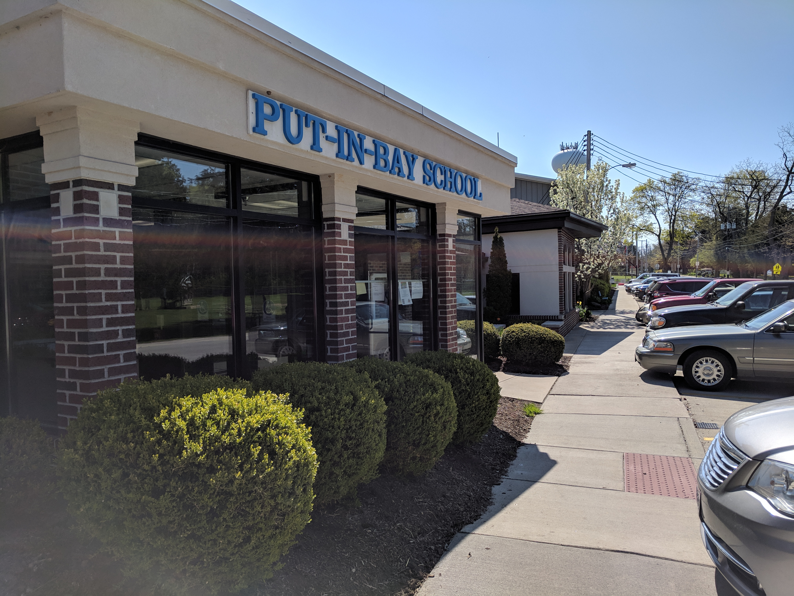

Education
This page details my previous and ongoing education.
| Table of Contents |
|---|
High School
I graduated from Put-in-Bay High School in the spring of 2019. Put-in-Bay High School is a small school located on South Bass Island, Ohio. I was the class Valedictorian, and I graduated with a diploma with honors.
|  |
| Image of my high school. |
My computer science career began while I was in high school. During my senior year, I completed an independent study course where I programmed a side-scrolling computer game. The project took approximately four months to complete, and I learned the basics of game development. I also learned how to use a C++ library called Simple DirectMedia Layer.
I also entered a project into my school’s science fair. For this project, I wrote a program which imitates a basic neural network. The project qualified to compete at the district science fair in Toledo, Ohio. At the district science fair, my project qualified to compete at the state science fair in Columbus, Ohio. At the state science fair, my project earned a near-perfect score.
Undergraduate
I am currently an undergraduate student at Miami University in Oxford, Ohio. My major is Computer Science, and I have a minor in Electrical Engineering. My expected date of graduation is May 2023. My current grade point average is 4.0.
While at Miami University, I have taken a number of courses which have greatly increased my abilities as a computer scientist. They include:
- CSE 271 – Object-Oriented Programming: Taught me the four fundamental principles of object-oriented programming (encapsulation, inheritance, abstraction, and polymorphism) as well as how to write classes in Java.
- CSE 274 – Data Structures: Taught me the basics of different data structures including their structure, purpose, and operation time complexities.
- CSE 278 – Introduction to Systems Programming: Introduced me to the basics of systems programming including C++, SQL, and some assembly.
- MTH 231 – Elements of Discrete Mathematics: Instructed me on the fundamentals of discrete mathematics including logic, counting, sets, and recursive definitions. In addition, I learned how to prove mathematical facts by induction, strong induction, and recursive induction.
- ECE 287 – Digital Systems Design: Instructed me on the basic concepts of logic gates and logic circuits. I learned how to construct adders, multipliers, etc. I also learned how to use Karnaugh maps to simplify logic circuits, and I learned the basics of VHDL programming.